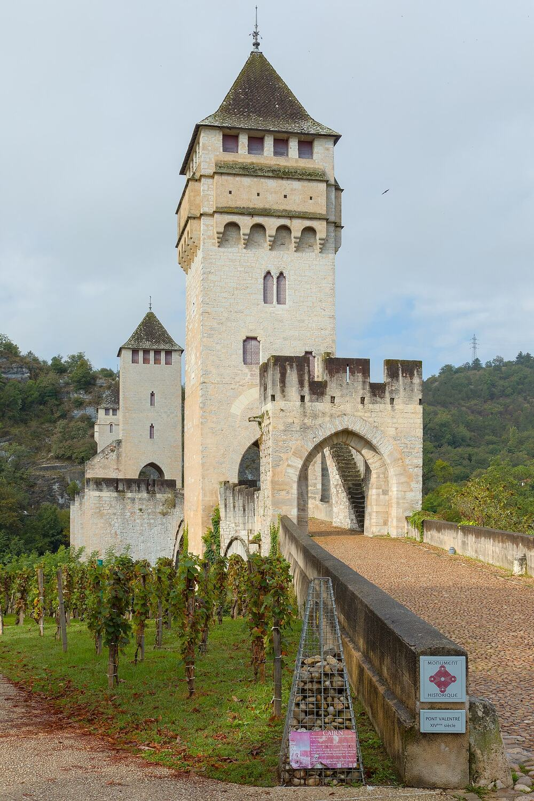
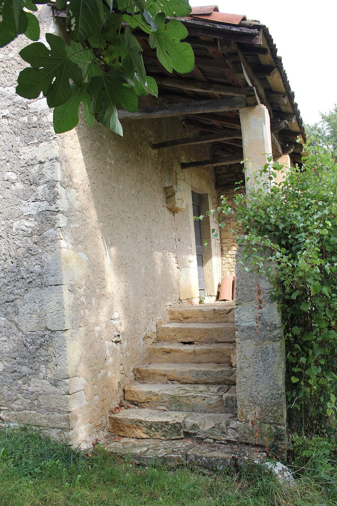

Vente
Maisons, appartements, propriétés : mise en valeur, visites qualifiées et négociation.
Maisons en pierre, appartements du centre historique, propriétés et terrains : nous vous accompagnons à Cahors et dans tout le Quercy depuis 2012.
Installée rue Henry Puget depuis 2012, l'agence Dubernet Immobilier est dirigée par Pierre Dubernet de Garros. Nous connaissons chaque rue de Cahors et chaque village du causse : c'est cette connaissance du terrain que nous mettons au service de votre projet.

Saint-Cirq-Lapopie, Mercuès, Luzech, le vignoble de Cahors : nous vous aidons à trouver le lieu qui vous ressemble.
Parcourir les biensMaisons, appartements, propriétés : mise en valeur, visites qualifiées et négociation.
Un avis de valeur précis et gratuit, fondé sur les ventes réelles du secteur.
Terrains à bâtir et parcelles, avec les informations d'urbanisme utiles.
Locaux et fonds de commerce à Cahors et dans le Grand Cahors.
Nous nous déplaçons chez vous pour une estimation gratuite et sans engagement, puis nous vous présentons notre plan de mise en vente.
Demander une estimation
L'agence vous accueille en plein centre de Cahors.
| Lundi | 15h00 – 19h00 |
| Mardi – vendredi | 9h00 – 19h00 |
| Samedi, dimanche | Fermé |